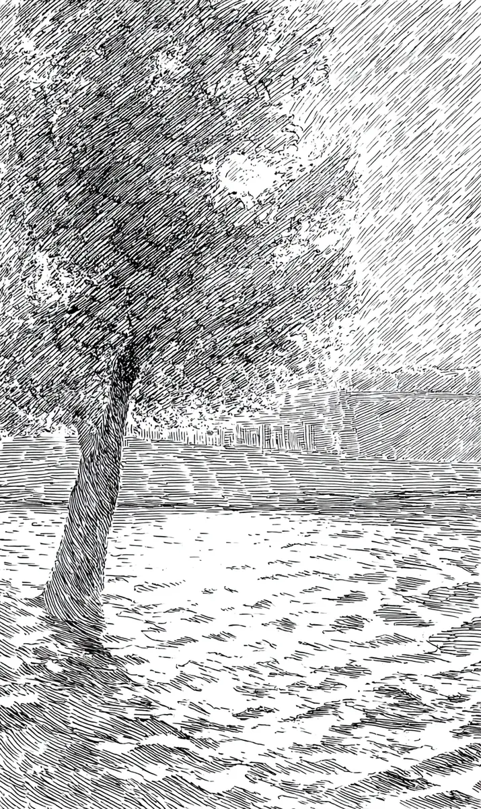

만수가 삼각대를 모래에 콱 박았다.
[Mansu jammed his tripod into the sand.]
“드디어, 완벽한 외로운 나무.”
[”Finally. The perfect lonely tree.”]
그런데 나무가 헛기침을 했다.
[But the tree cleared its throat.]
“왼쪽 말고 오른쪽. 그쪽이 내 잘생긴 가지야.”
[”Not the left, the right. That’s my handsome side.”]
만수는 카메라를 떨어뜨릴 뻔했다.
[Mansu almost dropped his camera.]
“나무가, 말을 해요?”
[”A tree, talks?”]
“칠십 년을 여기 서 있었어. 입이 근질근질하지.”
[”I’ve stood here seventy years. The mouth gets itchy.”]
바람이 잎을 휘날리며 끼어들었다.
[The wind swept in, fluttering the leaves.]
“장 선생님, 머리 손질 다 끝냈습니다.”
[”Mr. Jang, your hair is all done.”]
“바람아, 너는 내 스타일리스트지 사진사가 아니야.”
[”Wind, you are my stylist, not the photographer.”]
파도가 깔깔 웃었다.
[The waves cackled.]
“늙은 나무가 모델 흉내라니, 아이고 배야!”
[”An old tree playing model, oh my sides!”]
그러더니 바다가 생선 한 마리를 휙 던졌다.
[Then the sea flung a fish.]
생선이 만수의 이마를 찰싹 때렸다.
[The fish slapped Mansu on the forehead.]
“집중! 빛 사라지기 전에 찍어!” 나무가 소리쳤다.
[”Focus! Shoot before the light dies!” the tree shouted.]
만수가 셔터를 누르려는 순간, 나무가 뿌리를 쑥 뽑았다.
[The instant Mansu pressed the shutter, the tree yanked out its roots.]
“각도가 영 별로야. 딱 두 걸음만 옮길게.”
[”The angle is all wrong. I’ll just move two steps.”]
나무가 모래 위를 뚜벅뚜벅 걸어갔다.
[The tree clomped across the sand.]
울타리가 비명을 질렀고, 갈매기들이 사방으로 흩어졌다.
[The fence screamed, and the gulls scattered everywhere.]
“안 돼요, 가만히, 제발 가만히!” 만수가 빌었다.
[”No, hold still, please hold still!” Mansu begged.]
나무가 딱 멈춰서 가장 우아한 자세를 잡았다.
[The tree stopped dead and struck its most graceful pose.]
찰칵.
[Click.]
만수가 화면을 들여다봤다.
[Mansu peered at the screen.]
사진 속 나무는 눈을 꼭 감고 있었다.
[In the photo, the tree had its eyes shut tight.]
“한 장 더?” 나무가 활짝 웃었다.
[”One more?” the tree beamed.]
바다가 벌써 다음 생선을 집어 들고 있었다.
[The sea was already picking up the next fish.]